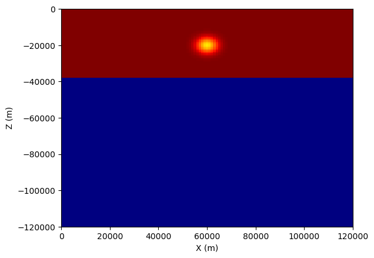

Add velocity perturbation#
Add velocity perturbation onto gll data format file#
The program of sem_model_addpert.f90 provide functions to add velocity perturbation to points with Gaussian spatial filtering. The program read all GLL points and then calculate the distance between perturbation points and GLL points to determine amplitudes of the Gaussian filter.
\[g(d) = \exp{-\frac{d^2}{2\sigma^2}}\]
Where the \(d\) is this distance. \(\sigma\) is the Gaussian factor in meter.
The core algorithm is shown as
do ipt=1,npts ! Number of perturbation points
do ispec=1,nspec
do k=1,NGLLZ
do j=1,NGLLY
do i=1,NGLLX
iglob = ibool(i,j,k,ispec)
! calculate distance
dist(ipt)=dsqrt((x(ipt)-dble(xstore(iglob)))**2 &
+(y(ipt)-dble(ystore(iglob)))**2 &
+(z(ipt)-dble(zstore(iglob)))**2)
gaus=exp(-1*dist(ipt)*dist(ipt)/2/sigma/sigma)
vstore_new(i,j,k,ispec)=vstore(i,j,k,ispec)*(1+pert*gaus)
dlnvs_gaus(i,j,k,ispec)=pert*gaus
enddo
enddo
enddo
enddo
enddo
Compilation#
Compile sem_model_addpert.f90 with mpif90.
mpif90 -O3 -traceback -o sem_model_addpert sem_model_addpert.f90 exit_mpi.f90 read_basin_topo_bathy_file.f90 utm_geo.f90
Run with mpirun#
To add a 6% perturbation with
model_dir=model_2layers
topo_dir=OUTPUT_FILES/DATABASES_MPI
cat > gaus01.dat << eof
60000.0 0.0 -20000.0
eof
dvs=0.06
sigma=3000
mpirun -np 4 $prog gaus01.dat $topo_dir $model_dir vs $dvs $sigma
Virtualization of GLL data format#
Convert binary file to npz#
I revise code of auxiliaries/project_and_combine_vol_data_on_regular_grid.f90 for converting materials form the GLL format to npz format.
data_filename=vs
indir=model_pert/
outdir=output_vtk/
cat > fd_proj_grid.txt <<eof
0.0 -20000.0 -120000
1000 1000 800
121 41 151
eof
mpirun -np $NPROC ./bin/xproject_and_combine_vol_data_on_regular_grid $data_filename $indir $outdir
Note
The format of each line in fd_proj_grid.txt is
Starting Coordinates
Sampling of points
Number of points
Slice and plotting#
Now using matplotlib to plot cross sections
import numpy as np
import matplotlib.pyplot as plt
def plot(name='vs'):
data = np.load('output_vtk/{}_projected.npz'.format(name))
center_y = int((data['y'].size-1)/2)
sec = data[name][:, center_y, :].T
print(data['z'])
plt.pcolormesh(data['x'], data['z'], sec, cmap='jet_r')
plt.xlim([data['x'][0], data['x'][-1]])
plt.ylim([data['z'][0], data['z'][-1]])
plt.xlabel('X (m)')
plt.ylabel('Z (m)')
plt.savefig('{}_sec_y{:.2f}.png'.format(name, data['y'][center_y]), bbox_inches='tight')
if __name__ == '__main__':
plot('vs')
